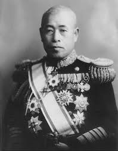

Comandantes del Eje

Isoroku Yamamoto
Mariscal Almirante de la Armada Imperial Japonesa y comandante en jefe de la Flota Combinada durante la Segunda Guerra Mundial. Fue el cerebro detrás del ataque a Pearl Harbor, que llevó a Estados Unidos a la guerra. También estuvo al mando de las fuerzas japonesas durante la decisiva Batalla de Midway. Su liderazgo fue crucial en las primeras victorias navales de Japón en el Pacífico, aunque su muerte en 1943 en una operación de intercepción estadounidense fue un golpe significativo para el esfuerzo de guerra japonés.